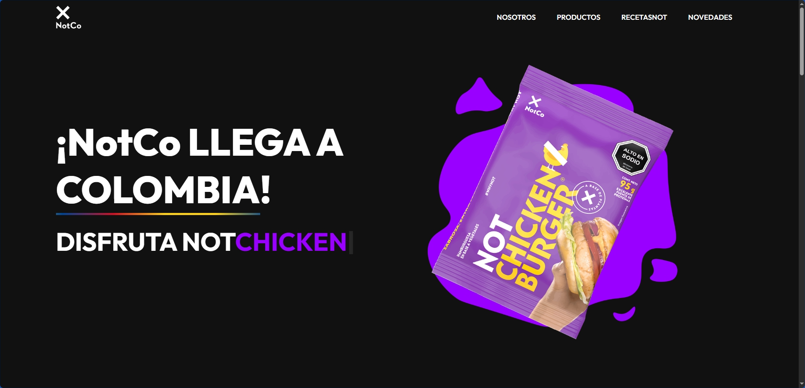
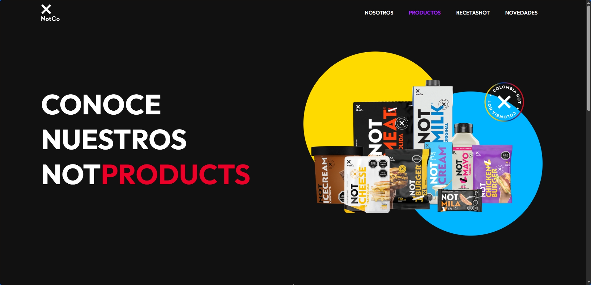
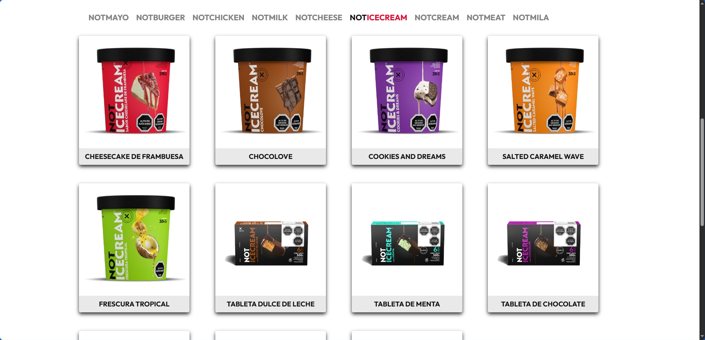
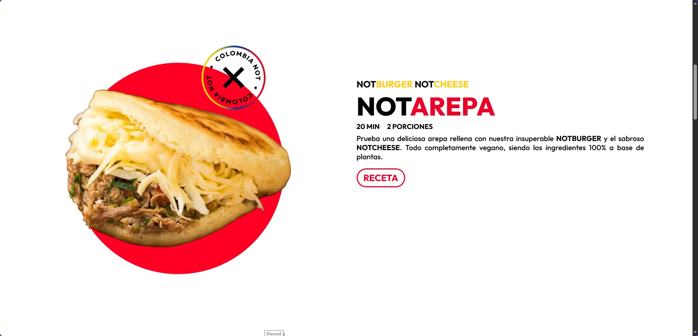
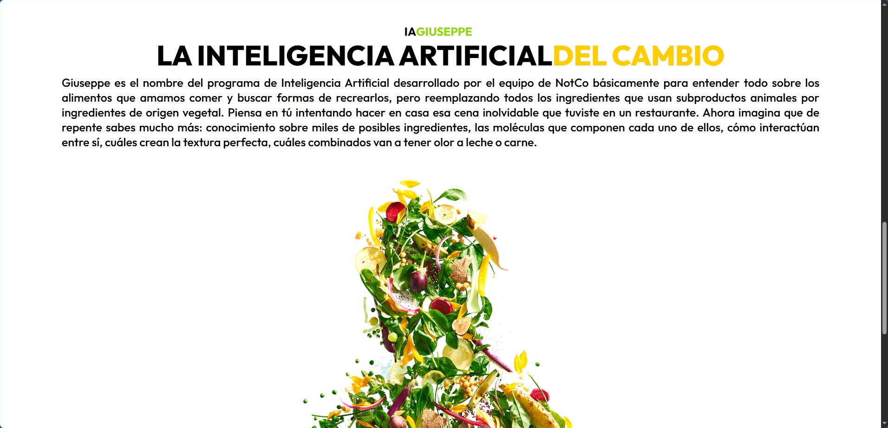
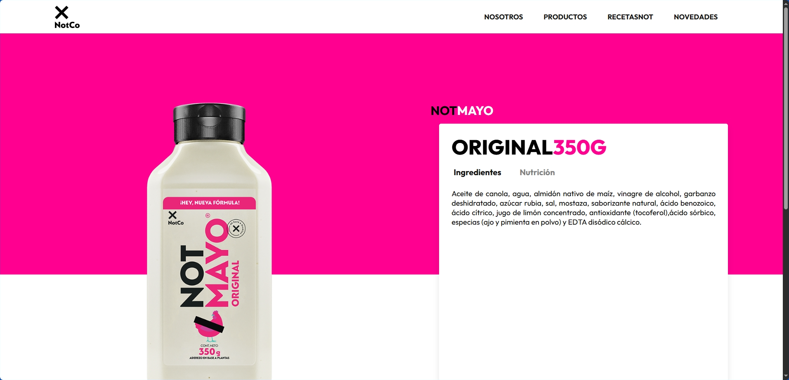
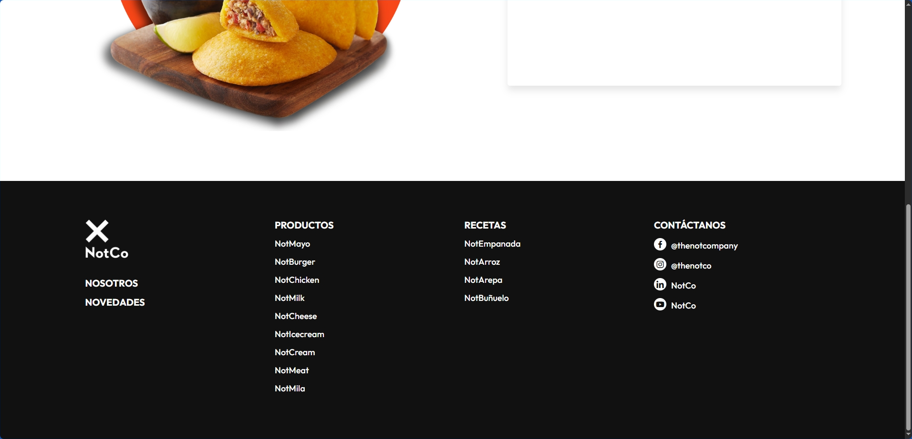

Sitio web NotCo
Sitio web desarrollado en un reto de programación de 2-3 días durante mi etapa electiva en el SENA, para presentar la llegada de NotCo a Colombia de forma hipotética con un toque local.
Descripción
Este proyecto surgió como un reto de programación durante mi etapa electiva en el SENA: en 2-3 días, debíamos desarrollar el sitio web de una marca que llegaba a Colombia, en este caso, NotCo, implementando el producto con un toque de sabor colombiano.
Trabajé en equipo con dos compañeros que se encargaron de algunas piezas gráficas; yo me encargué de toda la programación, algunas piezas gráficas y la implementación del sitio. Por la limitación de tiempo, el sitio no cuenta con diseño responsive, no alcanzamos a cubrirlo dentro del reto.
Fuimos reconocidos como ganadores del reto por la buena implementación web de la imagen de marca de NotCo.
Desafíos y aprendizajes
El principal desafío fue desarrollar el proyecto dentro de un tiempo muy limitado sin perder la identidad visual de la marca. Fue necesario definir cuidadosamente la estructura de las secciones, organizar la información de forma clara y mantener una interfaz consistente con la estética de NotCo. Desde el punto de vista técnico, también procuré escribir un código limpio, organizado y reutilizable, de manera que pudiera aprovechar componentes y estructuras en otras páginas similares del portafolio. Esta experiencia reforzó la importancia de planificar la arquitectura del proyecto desde el inicio para facilitar su mantenimiento y escalabilidad.
Herramientas
Habilidades demostradas
Galería






